<!--
title: Waypoint
answer: 7,4 | x=7 y=4
-->
    <p>The signal came from here.</p>

    <div class="radar">
      
      <p class="radar-status"><span class="blink">&#9679;</span> SIGNAL LOCKED</p>
    </div>

    <style>
      .radar { width: 100%; max-width: 360px; margin: 24px auto 0; }
      .radar img { display: block; width: 100%; height: auto; }
      .radar-status {
        font-family: 'Courier New', monospace; font-size: 13px; letter-spacing: .3em;
        color: #4cf0ff; text-shadow: 0 0 8px #4cf0ff88; margin: 10px 0 0;
      }
      .radar .blink { color: #ff5a7a; animation: blink 1.2s steps(1) infinite; }
      @keyframes blink { 50% { opacity: 0; } }
      @media (prefers-reduced-motion: reduce) { .radar .blink { animation: none; } }
    </style>
